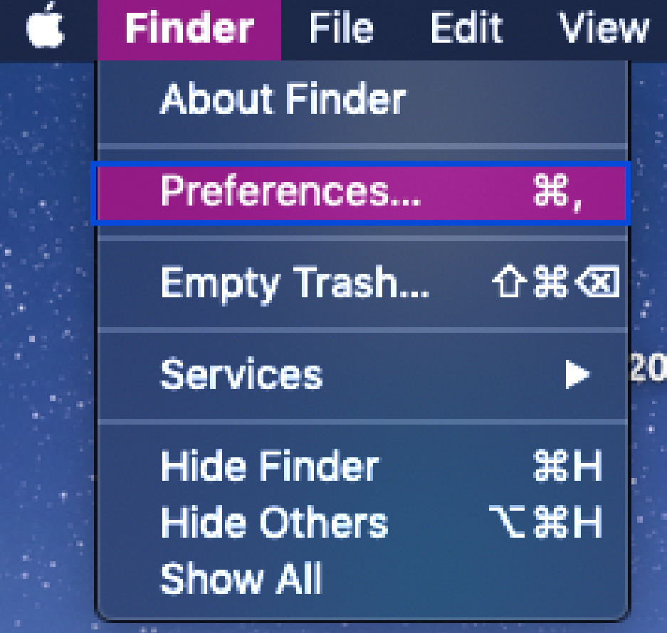
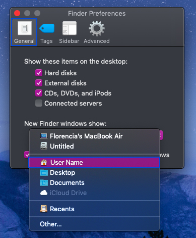

Steps to find your User Name |
|---|
| 1. Go to Finder (located at the top-left corner in your screen) and select "Preferences...":  2. A new window called "Finder Preferences" should appear (see below). Select "General" and open the drop-down menu under "New Finder windows show". Choose "User Name" and you will find the username of the computer.  |